MATEMATIKA - SPLOŠNA MATURA (osnovna raven)
Spomladanski izpitni rok
Sobota, 3. junij 2023
2. pola
A) Kratke naloge
1. Dano je aritmetično zaporedje s splošnim členom 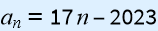 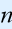 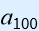
Splošni člen zaporedja je 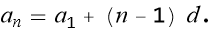
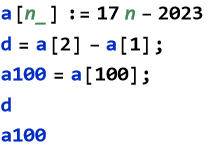
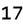
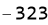
Torej rešitev je 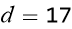 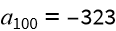
2. Dijaki oddelkov 1A, 1B in 1C so ob isti uri pisali enako matematično pisno nalogo. Podatki o povprečnih ocenah in številu dijakov v oddelkih so zbrani v preglednici.
| Oddelek | Povprečna ocena oddelka | Število dijakov v oddelku |
| 1A | 2.8 | 25 |
| 1B | 3.3 | 30 |
| 1C | 3.5 | 22 |
Na desetinko natančno izračunajte povprečno oceno dijakov vseh treh oddelkov pri tej pisni nalogi.
Povprečje bomo izračunali tako, da bomo izračunali vsoto povprečnih ocen z zmnožkom učencev v oddelku in potem delili s številom vseh učencev.
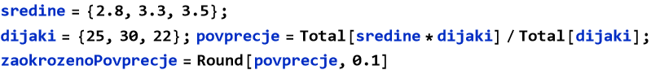
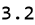
3. Narišite vektorja 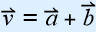 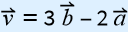
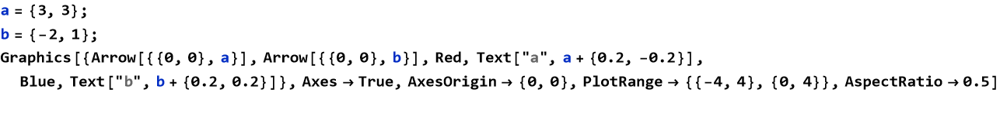
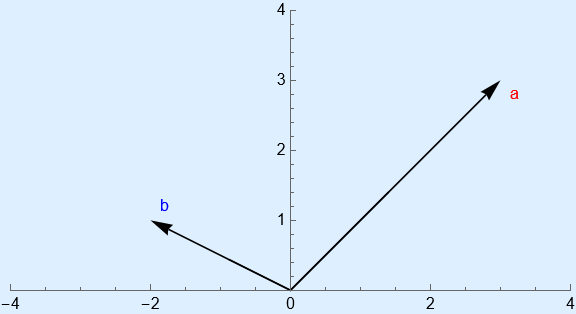
Iz slike razberemo, da je 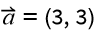 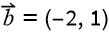 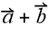 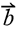 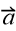 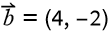 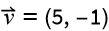
Najprej bomo  in konec premaknjenega vektorja
in konec premaknjenega vektorja  povezali in to bo naša vsota po paralelogramskem pravilu.
povezali in to bo naša vsota po paralelogramskem pravilu.
Pri konstrukciji drugega vektorja bomo pa najprej obrnili smer in mu podvojili dolžino tako, da bo imel sedaj koordinate  . Naša rešitev bo vektor
. Naša rešitev bo vektor
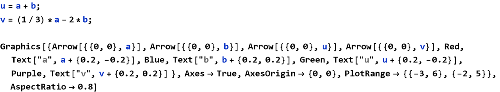
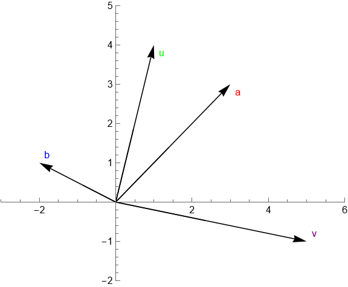
4. Poenostavite izraze v prvem stolpcu preglednice in izberite rešitev v drugem stolpcu. Glejte rešeni primer v prvi vrstici.
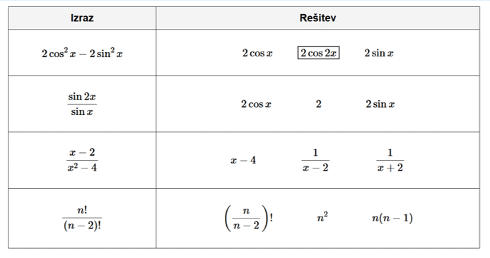
1. izraz: dvojni kot sinusa zapišemo kot 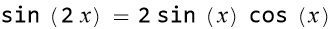 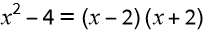 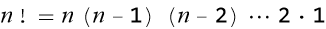 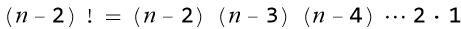 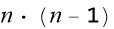
2. izraz: imenovalec razstavimo
3. izraz: fakulteto lahko zapišemo kot
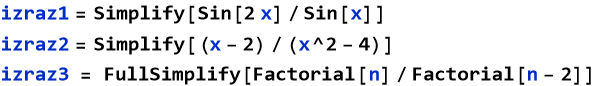
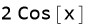
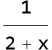
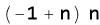
5. Parabola na sliki je graf kvadratne funkcije 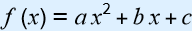 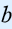
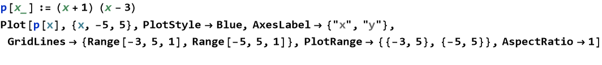
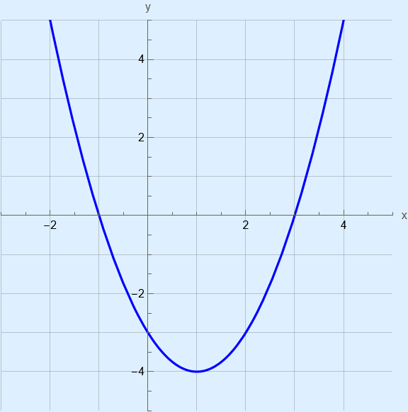
Iz slike je razvidno, da ima parabola ničli v -1 in 3, zato jo lahko zapišemo v ničelni obliki 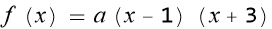
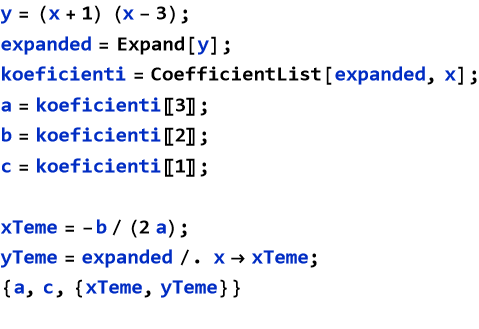
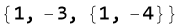
Torej 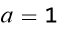 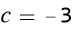 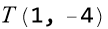
6. Na koliko različnih načinov se lahko postavi v vrsto za kosilo 5 odraslih in 3 otroci, če naj stojijo otroci skupaj?
Ker morajo otroci stati skupaj, jih bomo obravnavali kot en blok. Torej imamo blok otrok in pet odraslih, skupaj šest elementov, ki jih bomo permutirali ( 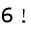 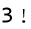
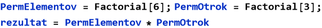
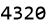
7. Valj s prostornino 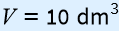
Formula za prostornino valja je 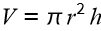
ODGOVOR: Polmer osnovne ploskve meri 188,063 mm.
8. Dan je trikotnik s podatki , in . Izračunajte ploščino trikotnika .
Ploščino trikotnika bomo izračunali po formuli .
B) Krajše strukturirane naloge
1. V spodnji tabeli je v srednjem stolpcu zapisan predpis funkcije v prvem stolpcu njen nedoločeni integral, v tretjem pa njen odvod. Dopolnite tabelo. V prvi vrstici je zapisan primer.
| 1. | |||
| 2. | |||
| 3. | |||
| 4. | |||
| 5. |
Tabelo izpolnimo s pomočjo znanih odvodov in integralov elementarnih funkcij.
| ∫f(x) dx | f(x) | f'(x) | |
| 1. | 2 x | ||
| 2. | 4+7 x | 7 | |
| 3. | -Cos[x] + C | Sin[x] | Cos[x] |
| 4. | |||
| 5. | Log[x] + C |
2. Gorišči elipse sta v točkah in , eno izmed temen pa je v točki .
2.1 Zapišite enačbo elipse.
2.2 Zapišite enačbo krožnice s središčem v točki , ki poteka skozi točko .
2.1: Ker sta gorišči simetrično razporejeni na osi , bo središče elipse v središču koordinatnega izhodišča: . Razberemo lahko tudi, da je ekscentričnost elipse . Iz temena razberemo, da je . izračunamo po formuli . Potem imamo dovolj podatkov, da zapišemo enačbo elipse v središčni obliki .
2.2: Torej podano imamo izhodišče . Ker poteka krožnica skozi točko , bo razdalja med in  enaka polmeru krožnice, to pa je edini podatek, ki nam še manjka. Polmer bomo izračunali po formuli , kjer sta in . Podatke vstavimo v enačbo krožnice v premaknjeni legi .
enaka polmeru krožnice, to pa je edini podatek, ki nam še manjka. Polmer bomo izračunali po formuli , kjer sta in . Podatke vstavimo v enačbo krožnice v premaknjeni legi .
3. Pred dvema letoma je bila mama petkrat starejša od sina, čez osem let pa bo mamina starost starosti sina. Kolikšni sta starosti mame in sina danes? Zapišite odgovor.
Iz teh dveh trditev bomo izpeljali dve enačbi z dvema neznankama. Naj bo mama in sin.
- pred dvema letoma:
- čez osem let:
ODGOVOR: Danes je mama stara 32 let, sin pa 8 let.
4. V razredu z 28 dijaki je 20 deklet in 8 fantov.
4.1. V ponedeljek bo profesor naključno izbral enega od njih in ocenil njegovo znanje. Izračunajte verjetnost, da bo izbrani dijak fant.
4.2. V sredo bosta naključno izbrana dva. Izračunajte verjetnost, da bosta to dekleti.
4.1: Število načinov, kako lahko izbere enega izmed fantov, je . Ker računamo verjetnost, moramo to deliti s številom vseh možnosti. Te pa so na koliko načinov lahko izberemo enega izmed vseh dijakov: .
4.2: Razmislek je enak kot pri 4.1, le da najprej izbiramo dve dekleti, potem pa delimo z vsemi možnostmi, kjer izberemo dva izmed dijakov.
Torej, verjetnost za 4.1 je , za 4.2 pa je .
5. V geometrijskem zaporedju s količnikom 2 je vsota prvih dvanajstih členov enaka . Zapišite splošni člen tega zaporedja. Koliko členov zaporedja je manjših od ? Zapišite odgovor.
Splošna formula za geometrijsko vsoto prvih n členov se glasi: . S pomočjo le te lahko izrazimo ven neznanko tako, da v formulo vstavimo podatke . Splošni člen tega zaporedja izračunamo po formuli . Število členov zaporedja izračunamo z nastavkom neenakosti , kjer v vstavimo že izračunan splošni člen in s pomočjo logaritmiranja izrazimo neznanko n.
Izračunali smo, da je , in da je 10 členov zaporedja manjših od .
6. Slika prikazuje stolp CN Tower v Torontu. Vrhnji del stolpa meri . Stolp opazujemo iz točke , ki leži v ravnini nožišča stolpa tako, da je kot , kot pa . Izračunajte višino stolpa. Rezultat zapišite na desetinko metra natančno.
Nalogo bomo rešili s pomočjo sinusnega izreka, najprej pa si moramo pripraviti vse potrebne podatke. Oglejmo si velikosti kotov v trikotnikih in . Kot , zato je . Po suplementarnosti kotov sledi . Izračunamo lahko tudi velikost kota . Velikost tretjega kota v trikotniku je torej: . Sedaj imamo izračunane vse potrebne kote.
Po sinusnem izreku: . Ker je trikotnik pravokotni, lahko uporabimo zvezo za sinus kota : . Naša rešitev je torej .
Julija Meglič, februar 2025